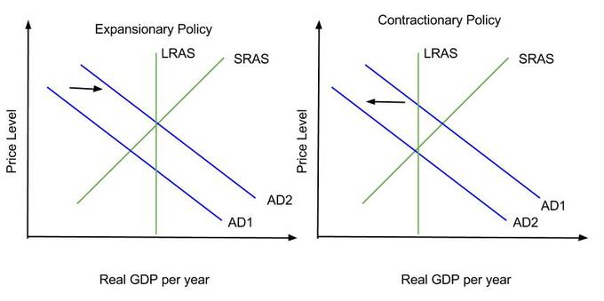
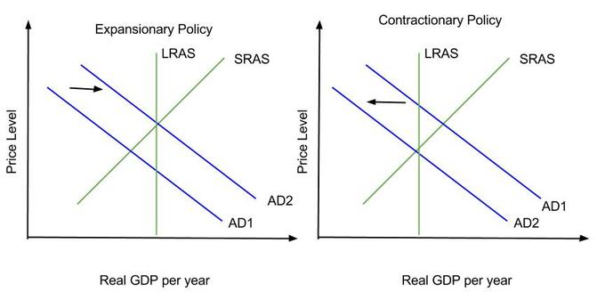
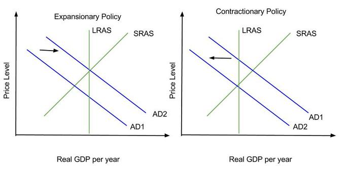
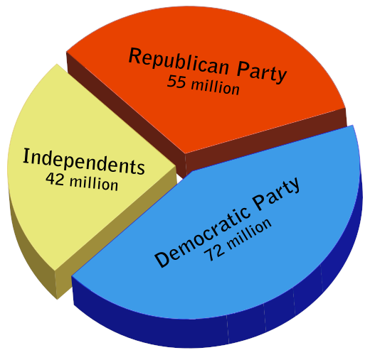
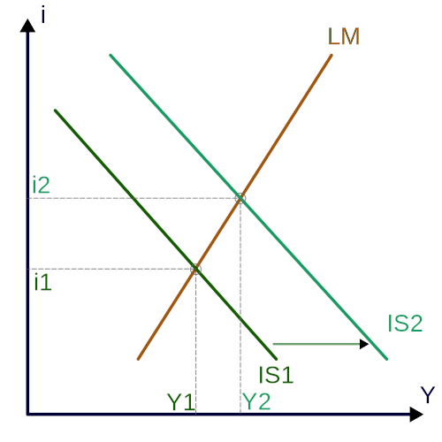
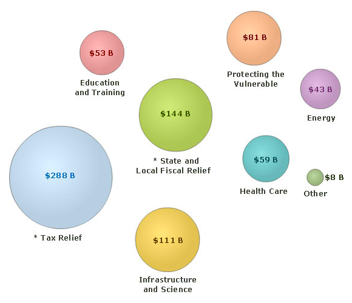

Fiscal policy is the use of government spending and taxation to influence the economy.
Define Fiscal Policy
Fiscal policy is the use of government spending and taxation to influence the economy. Governments use fiscal policy to influence the level of aggregate demand in the economy in an effort to achieve the economic objectives of price stability, full employment, and economic growth.
The government has two levers when setting fiscal policy:
There are three main types of fiscal policy:
In times of recession, Keynesian economics suggests that increasing government spending and decreasing tax rates is the best way to stimulate aggregate demand. Keynesians argue that this approach should be used in times of recession or low economic activity as an essential tool for building the foundation for strong economic growth and working towards full employment . In theory, the resulting deficit would be paid for by an expanded economy during the boom that would follow.
In times of recession, the government uses expansionary fiscal policy to increase the level of economic activity and increase employment.
In times of economic boom, Keynesian theory posits that removing spending from the economy will reduce levels of aggregate demand and contract the economy, thus stabilizing prices when inflation is too high.
Expansionary policy shifts the aggregate demand curve to the right, while contractionary policy shifts it to the left.
Examine the effect of government fiscal policy on aggregate demand
When setting fiscal policy, the government can take an active role in changing its spending or the level of taxation. These actions lead to an increase or decrease in aggregate demand, which is reflected in the shift of the aggregate demand (AD) curve to the right or left respectively .
Expansionary policy shifts the AD curve to the right, while contractionary policy shifts it to the left.
It is helpful to keep in mind that aggregate demand for an economy is divided into four components: consumption, investment, government spending, and net exports. Changes in any of these components will cause the aggregate demand curve to shift.
Expansionary fiscal policy is used to kick-start the economy during a recession. It boosts aggregate demand, which in turn increases output and employment in the economy. In pursuing expansionary policy, the government increases spending, reduces taxes, or does a combination of the two. Since government spending is one of the components of aggregate demand, an increase in government spending will shift the demand curve to the right. A reduction in taxes will leave more disposable income and cause consumption and savings to increase, also shifting the aggregate demand curve to the right. An increase in government spending combined with a reduction in taxes will, unsurprisingly, also shift the AD curve to the right. The extent of the shift in the AD curve due to government spending depends on the size of the spending multiplier, while the shift in the AD curve in response to tax cuts depends on the size of the tax multiplier. If government spending exceeds tax revenues, expansionary policy will lead to a budget deficit.
A contractionary fiscal policy is implemented when there is demand-pull inflation. It can also be used to pay off unwanted debt. In pursuing contractionary fiscal policy the government can decrease its spending, raise taxes, or pursue a combination of the two. Contractionary fiscal policy shifts the AD curve to the left. If tax revenues exceed government spending, this type of policy will lead to a budget surplus.
When the economy is producing less than potential output, expansionary fiscal policy can be used to employ idle resources and boost output.
Assess the mechanics and outcomes of fiscal policy
Keynesian economists argue that private sector decisions sometimes lead to inefficient macroeconomic outcomes which require active policy responses by the public sector in order stabilize output over the business cycle. Keynes advocated counter-cyclical fiscal policies (policies that acted against the tide of the business cycle). This means deficit spending and decreased taxes when an economy suffers from a recession and decreased government spending and higher taxes during boom times .
Keynesian economists advocate counter-cyclical fiscal policies. This means increased spending and lower taxes during recessions and lower spending and higher taxes during economic boom times.
According to Keynesian economics, if the economy is producing less than potential output, government spending can be used to employ idle resources and boost output. Increased government spending will result in increased aggregate demand, which then increases the real GDP, resulting in an rise in prices. This is known as expansionary fiscal policy. Conversely, in times of economic expansion, the government can adopt a contractionary policy, decreasing spending, which decreases aggregate demand and the real GDP, resulting in a decrease in prices.
The government can implement expansionary fiscal policy through increased spending, such as paying for the construction of new highways.
In instances of recession, government spending does not have to make up for the entire output gap. There is a multiplier effect that boosts the impact of government spending. The government could stimulate a great deal of new production with a modest expenditure increase if the people who receive this money consume most of it. This extra spending allows businesses to hire more people and pay them, which in turn allows a further increase in spending, and so on in a virtuous circle.
In addition to changes in spending, the government can also close recessionary gaps by decreasing income taxes, which increases aggregate demand and real GDP, which in turn increases prices. Conversely, to close an expansionary gap, the government would increase income taxes, which decreases aggregate demand, the real GDP, and then prices.
The effects of fiscal policy can be limited by crowding out. Crowding out occurs when government spending simply replaces private sector output instead of adding additional output to the economy. Crowding out also occurs when government spending raises interest rates, which limits investment.
Tax cuts have a smaller affect on aggregate demand than increased government spending.
Analyze the use of changes in the tax rate as a form of fiscal policy
Spending and taxation are the two levers available to the government for setting fiscal policy. In expansionary fiscal policy, the government increases its spending, cuts taxes, or a combination of both. The increase in spending and tax cuts will increase aggregate demand, but the extent of the increase depends on the spending and tax multipliers.
The government spending multiplier is a number that indicates how much change in aggregate demand would result from a given change in spending. The government spending multiplier effect is evident when an incremental increase in spending leads to an rise in income and consumption. The tax multiplier is the magnification effect of a change in taxes on aggregate demand. The decrease in taxes has a similar effect on income and consumption as an increase in government spending.
However, the tax multiplier is smaller than the spending multiplier. This is because when the government spends money, it directly purchases something, causing the full amount of the change in expenditure to be applied to the aggregate demand. When the government cuts taxes instead, there is an increase in disposable income. Part of the disposable income will be spent, but part of it will be saved. The money that is saved does not contribute to the multiplier effect .
The tax multiplier is smaller than the government expenditure multiplier because some of the increase in disposable income that results from lower taxes is not just consumed, but saved.
The multipliers are calculated as follows:
where MPC is the marginal propensity to consume (the change in consumption divided by the change in disposable income), and MPS is the marginal propensity to save (the change in savings divided by the change in disposable income).
The government spending multiplier is always positive. In contrast, the tax multiplier is always negative. This is because there is an inverse relationship between taxes and aggregate demand. When taxes decrease, aggregate demand increases.
The multiplier effect of a tax cut can be affected by the size of the tax cut, the marginal propensity to consume, as well as the crowding out effect. The crowding out effect occurs when higher income leads to an increased demand for money, causing interest rates to rise. This leads to a reduction in investment spending, one of the four components of aggregate demand, which mitigates the increase in aggregate demand otherwise caused by lower taxes.
Fiscal policy impacts GDP through the fiscal multiplier.
Discuss the mechanisms that allow the fiscal policy to affect GDP
Expansionary fiscal policy can impact the gross domestic product (GDP) through the fiscal multiplier. The fiscal multiplier (which is not to be confused with the monetary multiplier) is the ratio of a change in national income to the change in government spending that causes it. When this multiplier exceeds one, the enhanced effect on national income is called the multiplier effect.
The multiplier effect arises when an initial incremental amount of government spending leads to increased income and consumption, increasing income further, and hence further increasing consumption, and so on, resulting in an overall increase in national income that is greater than the initial incremental amount of spending. In other words, an initial change in aggregate demand may cause a change in aggregate output (and hence the aggregate income that it generates) that is a multiple of the initial change. The multiplier effect has been used as an argument for the efficacy of government spending or taxation relief to stimulate aggregate demand.
For example, suppose the government spends \$1 million to build a plant . The money does not disappear, but rather becomes wages to builders, revenue to suppliers, etc. The builders then will have more disposable income, and consumption may rise, so that aggregate demand will also rise. Suppose further that recipients of the new spending by the builder in turn spend their new income, raising demand and possibly consumption further, and so on. The increase in the gross domestic product is the sum of the increases in net income of everyone affected. If the builder receives \$1 million and pays out \$800,000 to sub contractors, he has a net income of \$200,000 and a corresponding increase in disposable income (the amount remaining after taxes). This process proceeds down the line through subcontractors and their employees, each experiencing an increase in disposable income to the degree the new work they perform does not displace other work they are already performing. Each participant who experiences an increase in disposable income then spends some portion of it on final (consumer) goods, according to his or her marginal propensity to consume, which causes the cycle to repeat an arbitrary number of times, limited only by the spare capacity available.
The money spent on construction of a plant becomes wages to builders. The builders will have more disposable income, increasing their consumption and the aggregate demand.
In certain cases multiplier values of less than one have been empirically measured, suggesting that certain types of government spending crowd out private investment or consumer spending that would have otherwise taken place.
Fiscal policy can have a multiplier effect on the economy.
Describe the effects of the multiplier beyond its relevance to fiscal policy
Fiscal policy can have a multiplier effect on the economy. For example, if a \$100 increase in government spending causes the GDP to increase by \$150, then the spending multiplier is 1.5. In addition to the spending multiplier, other types of fiscal multipliers can also be calculated, like multipliers that describe the effects of changing taxes. The size of the multiplier effect depends upon the fiscal policy.
Expansionary fiscal policy can lead to an increase in real GDP that is larger than the initial rise in aggregate spending caused by the policy. Conversely, contractionary fiscal policy can lead to a fall in real GDP that is larger than the initial reduction in aggregate spending caused by the policy .
The multiplier effect determines the extent to which fiscal policy shifts the aggregate demand curve and impacts output.
The size of the shift of the aggregate demand curve and the change in output depend on the type of fiscal policy. The multiplier on changes in government purchases, 1/(1 - MPC), is larger than the multiplier on changes in taxes, MPC/(1 - MPC), because part of any change in taxes or transfers is absorbed by savings. In both of these equations, recall that MPC is the marginal propensity to consume.
For example, the government hands out \$50 billion in the form of tax cuts. There is no direct effect on aggregate demand by government purchases of goods and services. Instead, GDP goes up only because households spend some of that \$50 billion. But how much will they spend? Households will spend MPC*\$50 billion (where MPC is the marginal propensity to consume). If MPC is equal to 0.6, the first-round increase in consumer spending will be \$30 billion (0.6*\$50 billion = \$30 billion). The initial rise in consumer spending will lead to a series of subsequent rounds in which the real GDP, disposable income, and consumer spending rise further.
Automatic stabilizers are modern government budget policies that act to dampen fluctuations in real GDP.
Explain the role of automatic stabilizers in regulating economic fluctuations
In macroeconomics, the concept of automatic stabilizers describes how modern government budget policies, particularly income taxes and welfare spending, act to dampen fluctuations in real GDP. The size of the government budget deficit tends to increase when a country enters a recession, which tends to keep national income higher by maintaining aggregate demand. This effect happens automatically depending on GDP and household income, without any explicit policy action by the government, and acts to reduce the severity of recessions.
Here is an example of how automatic stabilizers would work in a recession. When the country takes an economic downturn, more people become unemployed. As a result more people file for unemployment and other welfare measures, which increases government spending and aggregate demand. The unemployed also pay less in taxes because they are not earning a wage, which in turn decreases government revenue. The result is an increase in the federal deficit without Congress having to pass any specific law or act.
Similarly, the budget deficit tends to decrease during booms, which pulls back on aggregate demand. Because more people are earning wages during booms, the government can collect more taxes. Also, because fewer individuals need social services support during a boom, government spending also decreases. As spending decreases, aggregate demand decreases. Therefore, automatic stabilizers tend to reduce the size of the fluctuations in a country's GDP.
What makes automatic stabilizers so effective in dampening economic fluctuations is the fiscal multiplier effect. The fiscal multiplier is the ratio of a change in national income to the change in government spending that causes it. When this multiplier exceeds one, the enhanced effect on national income is called the multiplier effect.
The multiplier effect occurs as a chain reaction. The increased funds received from the government by citizens allows them to increase their consumption. As a result, producers must increase their production, which requires firms to hire more workers. Because of the increased purchases and lower unemployment, people have more money to spend and increase their consumption. This consumption-production-consumption cycle leads to the multiplier effect, resulting in an overall increase in national income greater than the initial incremental amount of spending. In other words, an initial change in aggregate demand may cause a change in aggregate output (and hence the aggregate income that it generates) that is a multiple of the initial change. Taxes are a part of the automatic stabilizers a country uses to minimize fluctuations in their real GDP. During boom times when the economy is doing well, people earn more income and this translates to higher tax revenues for the government, lowering the budget deficit.
Automatic stabilizers and discretionary policy differ in terms of timing of implementation and what each approach sets out to achieve.
Describe the differences between automatic stabilizers and discretionary policy
In fiscal policy, there are two different approaches to stabilizing the economy: automatic stabilizers and discretionary policy. Both approaches focus on minimizing fluctuations in real GDP but have different means of doing so.
Discretionary policy is a macroeconomic policy based on the judgment of policymakers in the moment, as opposed to a policy set by predetermined rules. Discretionary policies refer to actions taken in response to changes in the economy, but they do not follow a strict set of rules; rather, they use subjective judgment to treat each situation in unique manner. In practice, most policy changes are discretionary in nature. Examples may include passing a new spending bill that promotes a certain cause, such as green technology, or the creation of a federal jobs program. The Works Progress Administration (WPA) was part of the New Deal. The WPA is an example of a Depression-era discretionary policy meant to reduce unemployment by providing jobs for the unemployed.
Discretionary policies are generally laws enacted by Congress, which requires that any policy go through the same vetting and marking up process as any other law.
The key difference between these two types of financial policy approaches is timing of implementation. When the economy begins to go through an economic fluctuation, automatic stabilizers immediately respond without any official or government body having to take action. With discretionary policy there is a significant time lag. Before action can be taken, Congress must first determine that there is an issue and that action needs to be taken. Then Congress needs to design and implement a policy response. Then the law needs to be passed and the relevant agencies need to adjust and alter any necessary procedures so they can carry out the law. It is due to these significant lags that economists like Milton Friedman believed that discretionary fiscal policy could be destabilizing.
On the other hand, automatic stabilizers are limited in that they focus on managing the aggregate demand of a country. Discretionary policies can target other, specific areas of the economy. Discretionary policies can address failings of the economy that are not strictly tied to aggregate demand. For example, if an economy is going through a recession because its workers lack a certain set of skills, automatic stabilizers cannot address that problem. Government programs, such as retraining, can address this problem.
Finally, automatic stabilizers, such as the tax code and social service agencies, exist prior to an economic fluctuation. Discretionary policies are made in response to a fluctuation and only come into existence once a fluctuation starts to occur.
Of course, it is not possible to create an automatic stabilizer for every potential economic issue, so discretionary policy allows policymakers flexibility.
The federal budget dictates how much money the government plans to raise and how it plans to spend it in the upcoming year.
Describe how the federal budget is created and its economic role
The Federal Budget is the roadmap for how the national government plans to spend its money of the course of the upcoming year. It dictates which programs will receive funding and how much money the government will spend on each.
The Budget of the United States Government often begins as the president's proposal to the U.S. Congress which recommends funding levels for the next fiscal year, beginning October 1. However, Congress is the body required by law to pass a budget annually and to submit the budget passed by both houses to the president for signature. To help Congress pass the best budget possible, several government agencies provide data and analysis. These include the Government Accountability Office (GAO), Congressional Budget Office (CBO), the Office of Management and Budget (OMB), and the U.S. Treasury Department.
Congressional decisions are governed by rules and legislation regarding the federal budget process. Budget committees set spending limits for the House and Senate committees. Appropriations subcommittees then approve individual appropriations bills to allocate funding to various federal programs.
If Congress fails to pass an annual budget, a series of appropriations bills must be passed as "stop gap" measures. After Congress approves an appropriations bill, it is sent to the president, who may sign it into law, or may veto it (as he would a budget when passed by the Congress). A vetoed bill is sent back to Congress, which can pass it into law with a two-thirds majority in each chamber. Congress may also combine all or some appropriations bills into an omnibus reconciliation bill. In addition, the president may request and the Congress may pass supplemental appropriations bills or emergency supplemental appropriations bills.
The federal budget is meant to provide the larger American economy with a sense of direction regarding where the Federal government is going to go and what they are going to do. The Federal budget discloses how much the government plans to tax and how it plans to spend its money. Individuals and businesses can then adjust their actions to accommodate what they'll have to pay in taxes and what resources will be available to them in the government.
The federal budget also is one mechanism for conducting fiscal policy. The government can choose to expand or contract the budget to conduct expansionary or fiscal policy.
The specific items in the budget also have important policy implications: social welfare, social insurance, and government intervention in markets may all be reflected in the budget.
The U.S. Congress is responsible for passing the Federal Budget. If it cannot pass a Federal Budget, it must pass appropriation bills as a "stop gap. "
Balanced budgets, and the associated topic of budget deficits, are a contentious point within both academic economics and politics.
Describe arguments against maintaining a balanced budget in the United States
A balanced budget, particularly a government budget, is a budget with revenues equal to expenditures. There is neither a budget deficit nor a budget surplus; in other words, "the accounts balance. " More generally, it refers to a budget with no deficit, but possibly with a surplus. A cyclically balanced budget is a budget that is not necessarily balanced year-to-year, but is balanced over the economic cycle, running a surplus in boom years and running a deficit in lean years, with these offsetting over time .
John Maynard Keynes founded the Keynesian school, which promotes balanced governmental budgets over the course of the business cycle as opposed to annual balanced budgets.
Balanced budgets, and the associated topic of budget deficits, are a contentious point within academic economics and within politics.
Most economists agree that a balanced budget would:
In the US, every state other than Vermont has a version of a balanced budget amendment, which prohibits some deficits. The federal government does not have such an amendment.
The mainstream economic view is that having a balanced budget in every year is not desirable. If a country rigidly pursues a balanced budget regardless of the circumstances, critics argue that economic downturns would be needlessly painful. If balanced budgets were required and if the budget was in deficit during a recession, critics argue that the required cuts would make the economy even worse off.
Keynesian economists argue that government budgets should be balanced over the business cycles. During recessions governments should run deficits. Keynesians argue that increasing government spending and decreasing taxes can minimize the painful effects of a recession. Once an economy moves into a growth cycle, Keynesians believe the government should shift its perspective and try to run a budget surplus by decreasing spending and increasing taxes. By balancing deficits in recessions and surpluses in growth, Keynesians believe that the government can obtain the benefits of a balanced budget without facing the risks of making recessions worse due to spending and revenue limitations.
Expansionary fiscal policy can lead to decreased private investment, decreased net imports, and increased inflation.
Identify the long-run consequences of fiscal policy
Fiscal policy is the use of government revenue collection (taxation) and expenditure (spending) to influence the economy. The two main instruments of fiscal policy are changes in the level and composition of taxation and government spending in various sectors.
It is important to underline that fiscal policy is heavily debated, and that expected outcomes are not achieved with complete certainty. That being said, these changes in fiscal policy can affect the following macroeconomic variables in an economy:
Economists still debate the effectiveness of fiscal policy to influence the economy, particularly when it comes to using expansionary fiscal policy to stimulate the economy. When the government runs a budget deficit, funds will need to come from public borrowing (the issue of government bonds), overseas borrowing, or monetizing the debt. When governments fund a deficit with the issuing of government bonds, interest rates can increase across the market, because government borrowing creates higher demand for credit in the financial markets. This causes a lower aggregate demand for goods and services, contrary to the objective of a fiscal stimulus.
Some also believe that expansionary fiscal policy also decreases net exports, which has a mitigating effect on national output and income. When government borrowing increases interest rates it attracts foreign capital from foreign investors. This is because, all other things being equal, the bonds issued from a country executing expansionary fiscal policy now offer a higher rate of return. In other words, companies wanting to finance projects must compete with their government for capital so they offer higher rates of return. To purchase bonds originating from a certain country, foreign investors must obtain that country's currency. Therefore, when foreign capital flows into the country undergoing fiscal expansion, demand for that country's currency increases. The increased demand causes that country's currency to appreciate. Once the currency appreciates, goods originating from that country now cost more to foreigners than they did before and foreign goods now cost less than they did before. Consequently, exports decrease and imports increase.
Other possible problems with fiscal stimulus include inflationary effects driven by increased demand. Simply put, increasing the capital in a given system will eventually devalue the currency itself if there is an increase in money supply in circulation. Similarly, if stimulus capital is invested in creating jobs, the overall spending in a given economy will increase (that is, if jobs are actually created). This spending increase will shift demand to potentially increase price points. Whenever fiscal policy decisions are made, modeling the likelihood of inflation is a critical consideration.
If a country pursues and expansionary fiscal policy, high inflation becomes a concern.
Government debt limits future government actions and can be hard to pay off because Congressmen are unwilling to do what is necessary to pay down the debt.
Evaluate the consequences of imbalances in the government budget
Deficit spending during times of recession widely seen as a beneficial policy that can mitigate the effects of an economic downturn. However, even Keynesians that support deficit spending during recessions advise that governments balance this deficit spending with surpluses during the eventual economic boom. This means generating a government surplus by cutting expenses and raising taxes. This is known as a cyclically balanced budget; the government runs a deficit during recessions and lean years but a surplus during periods of significant growth.
During periods of expansionary fiscal policy, the government will often fund programs by issuing debt . The problem with debt is that it must be paid off with future revenues.
Publicly issued debt is one means governments use to fund expansionary fiscal policy. The problem with debt is that it needs to be paid off with future revenues, which curtails future government spending.
To pay off the debt, the government must maintain a certain level of income. This could limit the government's ability to pursue expansionary fiscal policies to address future recessions. On the other hand, if the government chooses to delay paying down the debt, the compounding interest will lead to more debt which will lead to a higher annual interest expense that future generations will have to pay.
To offset the budgetary deficits and raise the necessary funds to pay down debt, governments will ultimately have to lower costs and raise taxes. In any democracy, especially in the U.S., doing those two things are incredibly difficult because both options are unpopular with voters. Since Congress is responsible for making budgetary, spending and taxation decisions, and because these elected officials may be disinclined to do anything that would hurt their chances to be re-elected, taking the necessary steps to balance out the periods of deficit spending during economic boom is difficult.
A credit rating is an evaluation of the creditworthiness of a government, but not individual consumers. The evaluation is made by a credit rating agency of the country's ability to pay back the debt and the likelihood of default. A sovereign credit rating is the credit rating of a sovereign entity (i.e., a national government). The sovereign credit rating indicates the risk level of the investing environment of a country and is used by investors looking to invest abroad. It takes political risk into account, as well as the amount of debt the country has outstanding.
If a country has a bad credit rating, it generally must have a higher interest rate on the debt it issues. This means it will be more expensive for that country to raise funds by issuing debt.
Two key limits of fiscal policy are coordination with the nation's monetary policy and differing political viewpoints.
Identify the political and economic limits of fiscal policy
While fiscal policy can be a powerful tool for influencing the economy, there are limits in how effective these policies are.
Fiscal policy and monetary policy are the two primary tools used by the State to achieve its macroeconomic objectives. While the main objective of fiscal policy is to influence the aggregate output of the economy, the main objective of the monetary policies is to control the interest and inflation rates. Fiscal policies have an impact on the goods market and monetary policies have an impact on the asset markets and since the two markets are connected to each other via the two macrovariables output and interest rates - the policies interact while influencing the output or the interest rates.
There is controversy regarding whether these two policies are complementary or act as substitutes to each other for achieving macroeconomic goals. Policy makers are viewed to interact as strategic substitutes when one policy maker's expansionary (contractionary) policies are countered by another policy maker's contractionary (expansionary) policies. For example: if the fiscal authority raises taxes or cuts spending, then the monetary authority reacts to it by lowering the policy rates and vice versa. If they behave as strategic complements,then an expansionary (contractionary) policy of one authority is met by expansionary (contractionary) policies of other.
The issue of interaction and the policies being complement or substitute to each other arises only when the authorities are independent of each other. But when, the goals of one authority is made subservient to that of others, then the dominant authority solely dominates the policy making and no interaction worthy of analysis would arise. Also, it is worthy to note that fiscal and monetary policies interact only to the extent of influencing the final objective. So long as the objectives of one policy is not influenced by the other, there is no direct interaction between them.
Fiscal policy is also a source of significant political conflict along party lines. Conservatives are more likely to reject Keynesianism and are more likely to argue that government should always run a balanced budget (and a surplus to pay down any outstanding debt), and that deficit spending is always bad policy .
There are two different approaches to fiscal policy in the US. Broadly, Democrats tend to be more Keynesian than Republicans.
Fiscal conservatism has academic support, predominantly associated with the neoclassical-inclined Chicago school of economics, and has significant political and institutional support, with all but one state of the United States (Vermont is the exception) having a balanced budget amendment to its state constitution. Fiscal conservatism was the dominant position until the Great Depression.
Liberals are more likely to be Keynesian and Post-Keynesians than Republican. They are more likely to argue that deficit spending is necessary, either to create the money supply (Chartalism) or to satisfy demand for savings in excess of what can be satisfied by private investment.
Chartalists argue that deficit spending is logically necessary because, in their view, fiat money is created by deficit spending: one cannot collect fiat money in taxes before one has issued it and spent it, and the amount of fiat money in circulation is exactly the government debt money spent but not collected in taxes.
The fiscal multiplier is the ratio of a change in national income to the change in government spending that causes it. When this multiplier exceeds one, the enhanced effect on national income is called the multiplier effect. The mechanism that can give rise to a multiplier effect is that an initial incremental amount of spending can lead to increased consumption spending, increasing income further and hence further increasing consumption, etc., resulting in an overall increase in national income greater than the initial incremental amount of spending. In other words, an initial change in aggregate demand may cause a change in aggregate output that is a multiple of the initial change.
How effective fiscal policy is depends on the multiplier. The greater the multiplier, the more effective the policy. If for some reason outside of the control of the government the multiplier remains low, the effectiveness of fiscal policy will remain limited at best.
Discretionary fiscal policy relies on getting the timing right, but this can be difficult to determine at the time decisions must be made.
Explain the effect of timing on the use of fiscal policy tools
A nation can respond to economic fluctuations through automatic stabilizers or through discretionary policy. With regards to automatic stabilizers, timing is not an issue. Automatic stabilizers are designed to respond to evolving economic conditions without anyone taking action.
With discretionary fiscal policy, timing plays a very significant role. Discretionary policy often requires that a set of laws must be passed through a legislature. This means that the problem has to be identified first, which means collecting macroeconomic data.
Good economic data are a precondition to effective macroeconomic management. With the complexity of modern economies and the lags inherent in macroeconomic policy instruments, a country must have the capacity to promptly identify any adverse trends in its economy and to apply the appropriate corrective measure. This cannot be done without economic data that is complete, accurate and timely. The problem with this is that it could be weeks, or even months, before the necessary data is collected and organized in a way that would reveal there is a problem.
Once the problem has been established, Congress must then arrive at a plan and hold debates. Any legislation must pass through committees in both chambers, and both chambers must approve. Then, it must be presented to the President for his signature. This entire process would take weeks at least, but would more likely take months .
It can take many months before Congress can pass a bill that would address current economic fluctuations.
Once the discretionary program is in place, the next step is to measure its effectiveness. Again, measurement becomes a problem. Because it takes so long to measure fluctuations in the economy, it may be months before the program's effect on the economy can be seen.
Usually the term "crowding out" refers to the government using up financial and other resources that would otherwise be used by private enterprise.
Explain the crowding out effect
Usually when economists use the term crowding out they are referring to the government using up financial and other resources that would otherwise be used by private enterprise. However, some commentators and other economists use crowding out to refer to government providing a service or good that would otherwise be a business opportunity for private industry.
The macroeconomic theory behind crowding out provides some useful intuition. What happens is that an increase in the demand for loanable funds by the government (e.g. due to a deficit) shifts the loanable funds demand curve rightwards and upwards, increasing the real interest rate. A higher real interest rate increases the opportunity cost of borrowing money, decreasing the amount of interest-sensitive expenditures such as investment and consumption. Thus, the government has crowded out investment .
When crowding-out occurs, the Investment-Savings (IS) curve moves to the right, causing higher interest rates (i) and expansion in the "real" economy (real GDP, or Y). LM stands for Liquidity Preference - Money Supply.
In economics, crowding-out occurs when increased government borrowing reduces investment spending. The increased borrowing crowds out private investing.
If an increase in government spending and/or a decrease in tax revenues leads to a deficit that is financed by increased borrowing, then the borrowing can increase interest rates, leading to a reduction in private investment. There is some controversy in modern macroeconomics on the subject, as different schools of economic thought differ on how households and financial markets would react to more government borrowing under various circumstances.
The extent to which crowding out occurs depends on the economic situation. If the economy is at capacity or full employment, then the government suddenly increasing its budget deficit (e.g., via stimulus programs) could create competition with the private sector for scarce funds available for investment, resulting in an increase in interest rates and reduced private investment or consumption. Therefore, the effect of the stimulus is offset by the effect of crowding out.
The American Recovery and Reinvestment Act of 2009 (ARRA) was drafted in response to the Great Recession, primarily in order to create jobs.
Summarize the effects of the use of stimulus in the wake of the Great Recession
The American Recovery and Reinvestment Act of 2009 (ARRA), otherwise known as the Stimulus or The Recovery Act, was an economic stimulus package was signed into law on February 17, 2009.
The ARRA was drafted in response to the Great Recession. The primary objective for ARRA was to save and create jobs almost immediately. Secondary objectives were to provide temporary relief programs for those most impacted by the recession and invest in infrastructure, education, health, and renewable energy .
Tax incentives includes \$15 B for Infrastructure and Science, \$61 B for Protecting the Vulnerable, \$25 B for Education and Training and \$22 B for Energy, so total funds are \$126 B for Infrastructure and Science, \$142 B for Protecting the Vulnerable, \$78 B for Education and Training, and \$65 B for Energy.State and Local Fiscal Relief Prevents state and local cuts to health and education programs and state and local tax increases.
The approximate cost of the economic stimulus package was estimated to be \$787 billion at the time of passage, later revised to \$831 billion between 2009 and 2019. The Act included direct spending in infrastructure, education, health, and energy, federal tax incentives, and expansion of unemployment benefits and other social welfare provisions. The rationale for ARRA came from Keynesian macroeconomic theory, which argues that during recessions, the government should offset the decrease in private spending with an increase in public spending in order to save jobs and stop further economic deterioration.
The primary justification for the stimulus package was to minimize unemployment. The Obama administration and Democratic proponents presented a graph in January 2009 showing the projected unemployment rate with and without the ARRA. The graph showed that if ARRA was not enacted the unemployment rate would exceed 9%; but if ARRA was enacted it would never exceed 8%. After ARRA became law, the actual unemployment rate exceeded 8% in February 2009, exceeded 9% in May 2009, and exceeded 10% in October 2009. The actual unemployment rate was 9.2% in June 2011 when it was projected to be below 7% with the ARRA. However, supporters of ARRA claim that this can be accounted for by noting that the actual recession was subsequently revealed to be much worse than any projections at the time when the ARRA was drawn up.
One year after the stimulus, several independent firms, including Moody's and IHS Global Insight, estimated that the stimulus saved or created 1.6 to 1.8 million jobs and forecast a total impact of 2.5 million jobs saved by the time the stimulus is completed. The Congressional Budget Office considered these estimates conservative. The CBO estimated that, according to its model, 2.1 million jobs were saved in the last quarter of 2009, boosting the country's GDP by up to 3.5% and lowering the unemployment rate by up to 2.1%.
In 2013, the Reason Foundation conducted a study of the results of the ARRA. Only 23% of 8,381 sampled companies hired new workers and kept all of them when the project was completed. Only 41% of sampled companies hired workers at all. 30% of sampled companies laid off all workers once the government money stopped funding. These results cast doubt on previously stated estimates of job creation numbers, which do not take into account those companies that did not retain their workers.
One of the primary purposes and promises of the Act was to launch a large number projects to stimulate the economy. However, a sizable number of these projects, many of which pertained to infrastructure, took longer to implement than they had expected by most. Just because the money was there for the projects did not mean that the projects were "shovel-ready": there was a delay between when the funding became available and when the project could actually begin. Since the stimulus only is impactful when the money is actually spent, delays could have reduced the overall effectiveness of the stimulus.
{kind=link}
{kind=link}
{kind=link}
{kind=link}
{kind=link}
{kind=link}